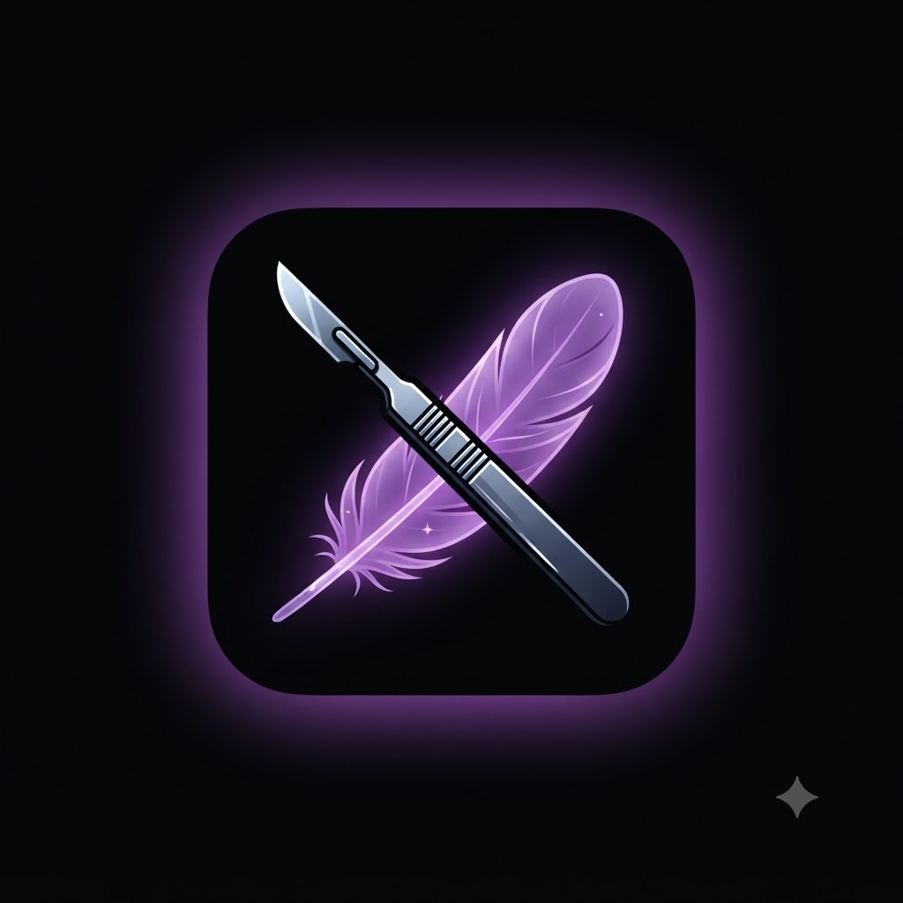
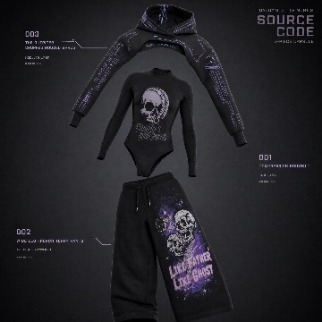

PLAYABLE · REVIEW01
Violet's Revenge
The precinct board-and-card game: an asymmetric escape-versus-capture investigation where legal actions, dice and hidden information are live engine state.
Enter the precinctLOPTR LAB · VIOLET’S REVENGE
An interactive gothic-forensic story.
An American forensics intern in London returns to work after devastating loss and violence. Hunting a network known as the Guilty, Violet builds every accusation on evidence—even as her investigation begins to expose the redactions in her own history.

Evidence, memory, agencyTHE DOOR IS OPEN
Each destination is its own experience. Connections describe creative lineage and shared practice; they do not assert shared canon or a release order.
The precinct board-and-card game: an asymmetric escape-versus-capture investigation where legal actions, dice and hidden information are live engine state.
Enter the precinctA separate fan-made crossover/review experience using the repository's browser story, Float Chess and Float Cards. The review destination is built from the separate source repository; Violet's precinct engine remains separate.
Enter A night in Derry Review the Derry sourceThe historical root action-horror game. This is distinct from the new precinct rules and from downloading its preserved archive.
Play the originalA gentler companion adventure about evidence, memory and the freedom to set a burden down, hosted within the verified Made Sick guide.
Visit the companionBrighton Afterglow: a Made Sick guide with optional, fan-written Money Game clues, practical travel context and a Violet's Remembrance route.
Explore Brighton AfterglowBreak the Grid: an independent Loptr Lab systems prototype about institutional pressure, consent, community care and collective redesign. It is not a Violet story or medical simulation.
Read the project sourceA public creative review surface for prototypes and documented decisions. Planned or unverified features are labelled as such.
Read the project surfaceSTORY & TREATMENT
Violet's Revenge follows one continuing investigation: evidence accumulates across encounters while Violet's pursuit of procedural certainty begins to expose the redactions in her own history. The public view stays spoiler-light; expanded treatment is optional.
PUBLIC, SPOILER-LIGHT SYNOPSIS
An American forensics intern in London returns to work after devastating loss and violence. Hunting a network known as the Guilty, Violet builds every accusation on evidence—even as her investigation begins to expose the redactions in her own history.
Violet researches outcomes for children whose mothers were killed by domestic violence. After the deaths of her colleague Sophia and Sophia's twin Solomon, Violet buries their unclaimed remains. She survives a subsequent attack and returns under the cover of office duty.
Her investigation follows the Witness, the Clerk, the Undertaker and the Coroner. Each encounter changes the investigative verb: catch a contradiction, navigate a ledger, de-escalate an enforcer and test a room that asserts a false account. Evidence accumulates across the story rather than resetting between encounters.
Her deeper arc concerns the difference between origin and identity, and between procedural authority and self-sovereignty. A redacted personal history gradually becomes part of the case.
SPOILER CONTROL · SEASON 2
Closing Time turns toward the Guardian who raised her. A warm Halloween tradition becomes unsettling when a familiar closing phrase appears outside its ritual context. Violet begins asking whether love and control can coexist.
Editorial basis: owner-supplied Drive documents and the source-derived summary supplied for this review. The originals were reachable as document shells in this environment; no independent full-text retrieval is claimed.
VISUAL DEVELOPMENT
Owner-supplied concept artwork for discussion only. These garments are not represented as manufactured, available for purchase or part of a commercial partnership.

PROJECT EVOLUTION
This map describes the requested creative lineage and shared design practices. It is not proof of chronology, shared canon or runtime integration.
WATERFALL · ILLUSTRATIVE ONLY
This is an illustrative funding and recoupment model for discussion only. No deal, funding commitment, clearance, distribution agreement or guild calculation is represented here.
Make the order visible before the numbers become persuasive: where development support might come from, what production and accessibility cost, which collection deductions apply under an assumed agreement, and what recoups before continuing development.
Change an input to see the proposed order. These are not approved commercial terms.
Illustrative order: gross → proposed deductions → costs recouped → remaining pool. Contracts would define the actual priority, shares, residuals, royalties, taxes and reporting.
BUILD IN PUBLIC
Playable evidence exists today: a vanilla precinct prototype, the archived root experience, and separate review destinations. This is a scoped conversation about rights, scope, accessibility and a financially transparent agreement.
VISUAL DEVELOPMENT
Owner-supplied visual-development artwork. Not manufactured, for sale or a commercial partnership.
ACCESSIBILITY
These controls change this presentation only. Keyboard focus remains visible and Escape closes this panel.